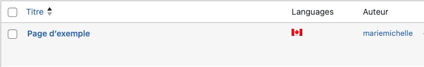
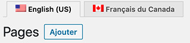
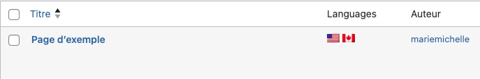

Wordpress possède plusieurs extensions permettant de traduire du contenu.
Pour sa gratuité, sa compatibilité avec ACF et sa facilité d'utilisation, nous regarderons WP Multilang.
Si votre installation a été faite en Canadien français 🇨🇦, le simple fait d'activer l'extension donnera l'option d'entrer du contenu soit en français ou en anglais 🇺🇸.
Si l'option n'est pas immédiatement disponible après l'activation de l'extension ou si vous désirez ajouter une autre langue, il suffit d'accéder à:
Réglages ➡️ WP Multilang ➡️ Langages
Pour contrôler les langages disponibles.
Gestion du contenu
Dans le tableau de bord, sur la page listant les articles et/ou pages un libellé sera ajouté indiquant la disponibilité du post dans les différents langages supportés. Par exemple, la page d'exemple par défaut n'existe à priori qu'en Canadien français.
Simplement en activant l'onglet English US en haut de page, il est possible de changer de contexte d'édition.
Dès lors, si la page en question est modifiée, par exemple si son titre est traduit "Example page", elle sera dorénavant listée du côté anglophone sous ce titre et un drapeau américain 🇺🇸s'ajoutera pour indiquer sa disponibilité dans cette langue.
Si un site offre l'option de traduire ses publications de base, il est généralement souhaitable que les posts personnalisés offrent la même option. Cependant, il est possible que WordPress n'affiche pas l'option par défaut.
Pour remédier à ce problème, il suffit de créer un fichier wpm-config.json à la racine de son thème. Ce fichier devra contenir un objet JavaScript indiquant les posts personnalisés qui devraient-êtres traduit.
Par exemple, si un seul type de posts personnalisés intitulé produit devait-être traduit, le contenu de ce fichier ressemblerait à ceci:
Si vous avez plusieurs types de posts personnalisés, par exemple: produit et personne, le fichier aurait alors l'air de ceci:
- TranslatePress (Payant $$$)
- WPML (Payant $$$)
- Polylang
- Etc.